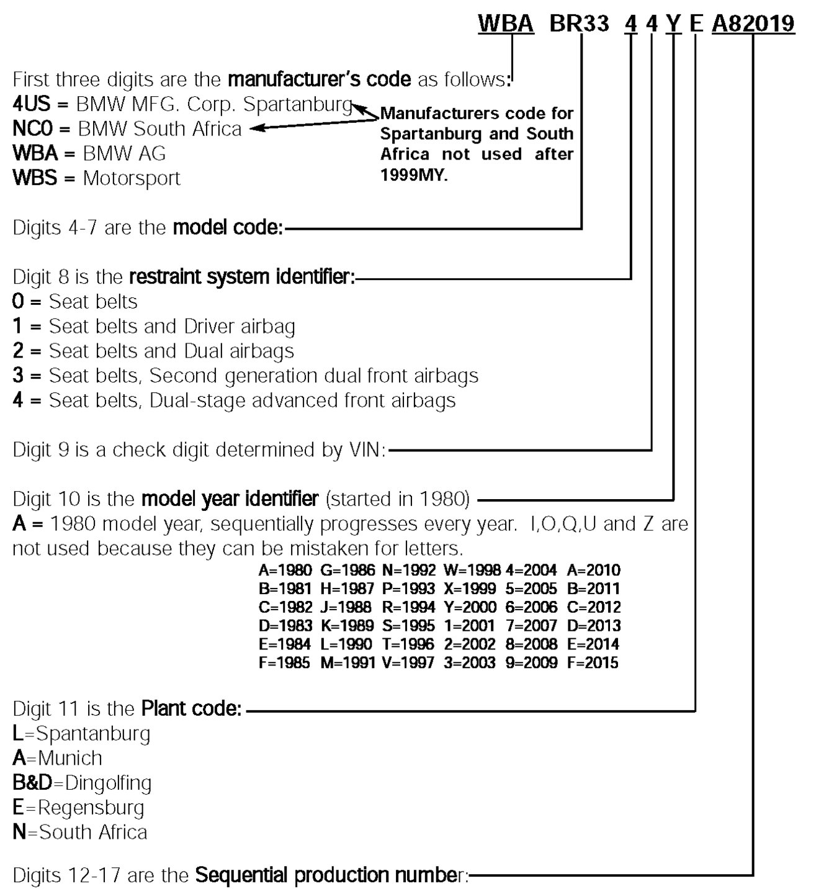
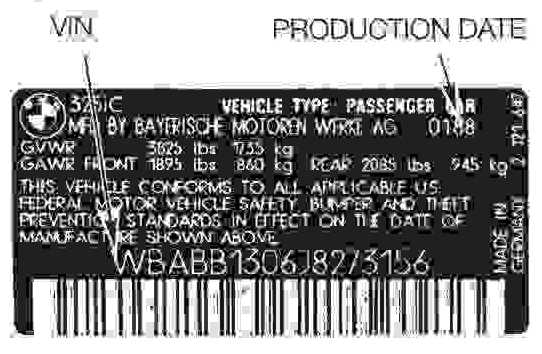

Repair and Diagnosis: Application and ID
Vehicle Identification Numbers
Vehicle Identification Numbers are referred to as the VIN. BMW utilizes a VIN with a 17 character structure. The characters are grouped to included multiple information as follows:
Vehicle Identification Number:

VIN Location On Vehicle
The VIN is located on the vehicle in the following locations:
- In the left lower corner of the dashplate. This can be viewed through the windshield from outside of the car.
- "B" pillar compliance label. On the driver's side door jamb.
Additionally the VIN is stamped into the body in one of the two locations below.
- Under hood on engine compartment bulkhead.
- Under hood on passenger side shock tower.
Vehicle Production Dates

The production date of the vehicle is included in the B pillar compliance label.
Production date information is required quite often when a repair procedure affects only a certain range of vehicles. The range is based on production dates.
The date shown on the label reflects the actual month and year the vehicle was produced. It is not a model year indicator.
Vehicle Production Anti-theft Labels
Since 1987, the National Highway Traffic Safety Administration (NHTSA) requires that the VIN be marked on specific parts of the car during manufacture for theft identification. Some models are exempt if there if the total number of vehicles imported is below a certain number.
If the vehicle does have the label it is also a reference point for the VIN.
If equipped, the label is placed on the following locations:
- Engine
- Transmission
- Hood
- Trunk lid
- Front bumper
- Rear Bumper
- Front Fenders
- Doors
- Quarter panels.